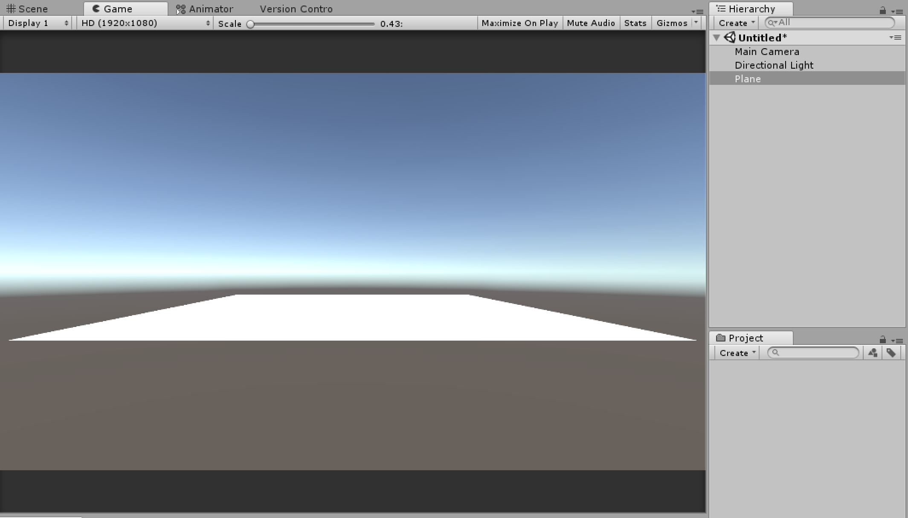
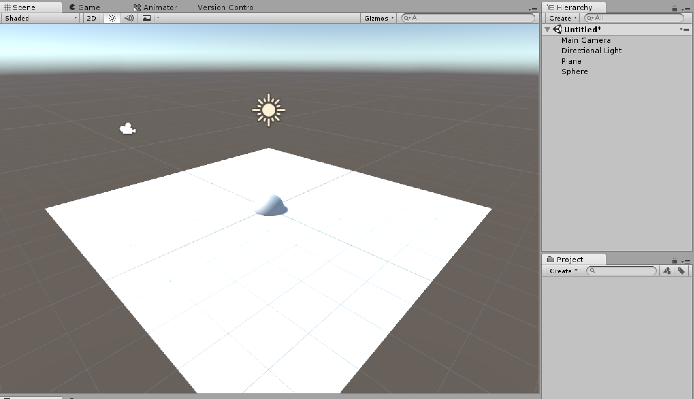
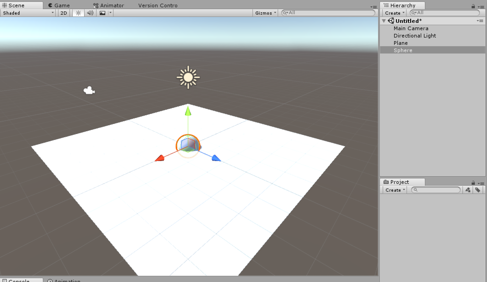
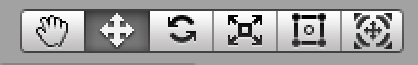
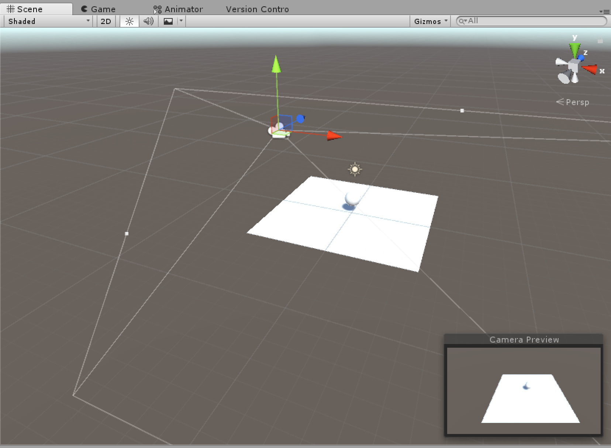
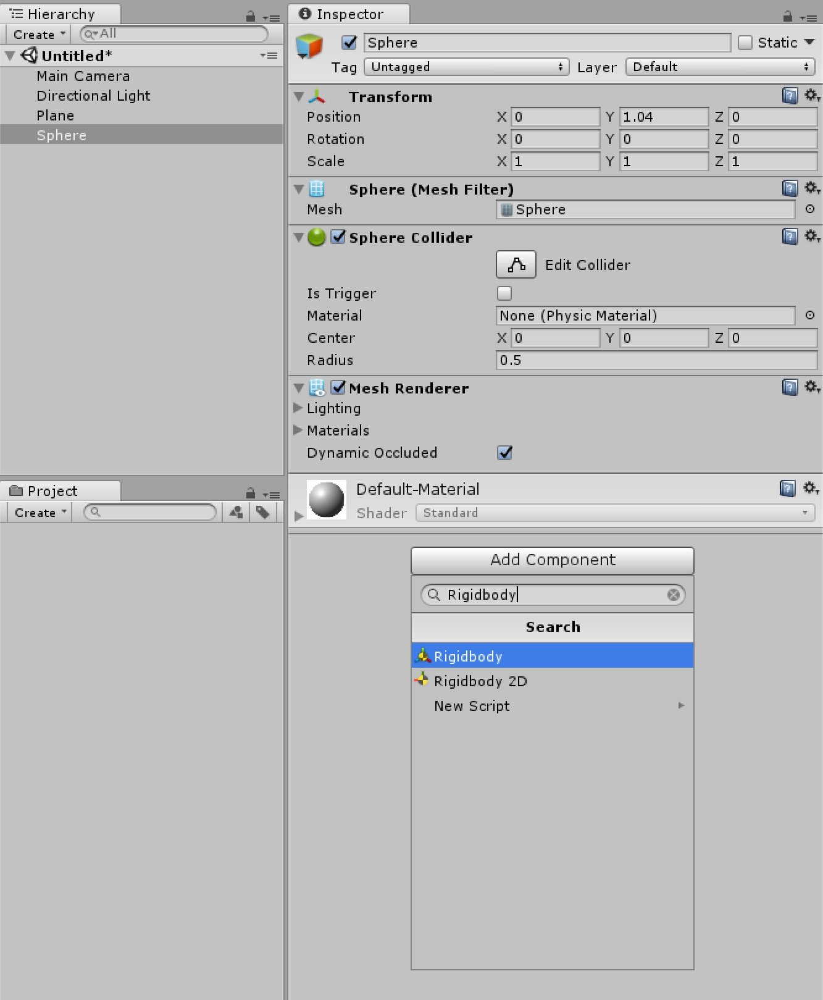
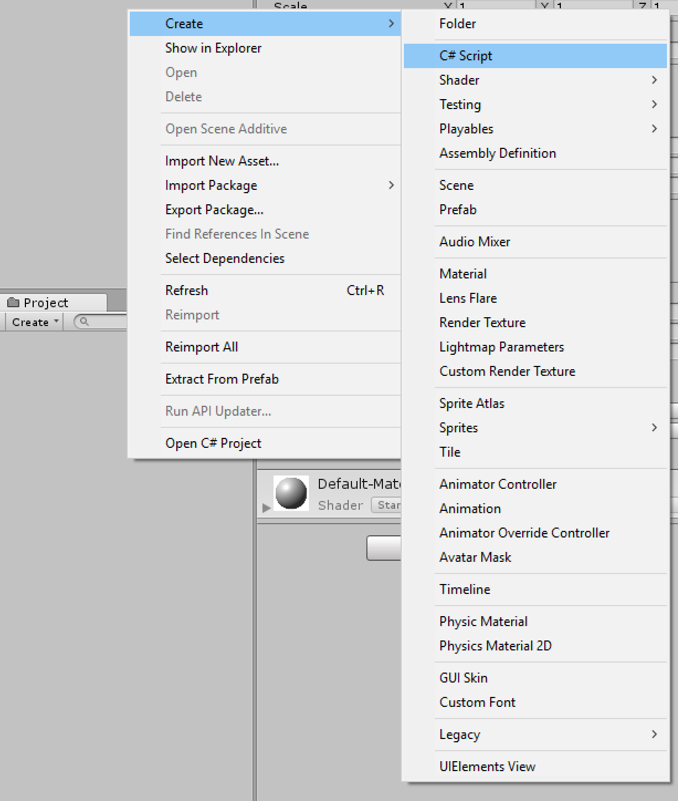
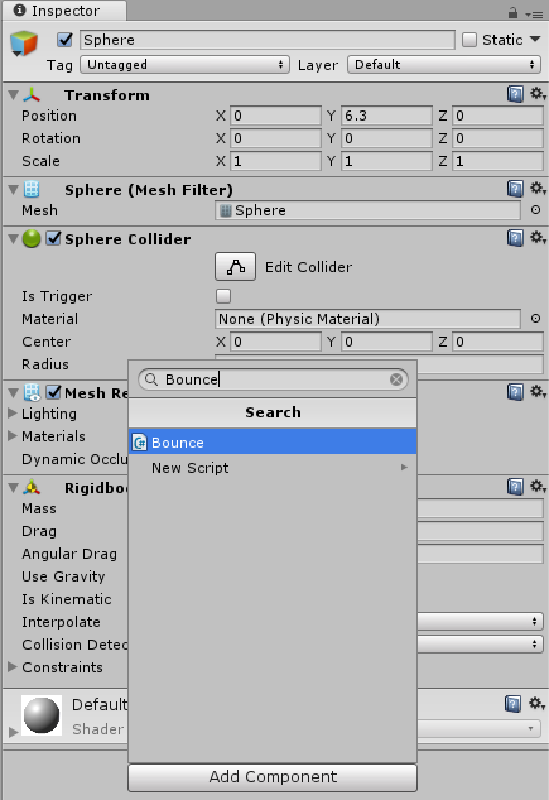

From Unity's website: "More than an engine, Unity offers everything you need to build beautiful and engaging content, boost your productivity, and connect with your audience. Tools and resources include continuous engine updates, multiplatform support, and documentation, forums and tutorials."
Go to the following link to the Personal Unity Download Page and then download Unity for your specific OS.
Here are a list of some of the many windows you'll use in Unity:
- Hierarchy
- Project
- Console
- Inspector
- Scene
- Game
Designing levels into unity is pretty easy. Unity allows importing of 3D Models made in programs like Blender and Maya but also contain some primitive types that you can use as well. In our case we will make a simple level where wa can move around a ball along the ground using the keyboard.
We want to add 2 things to our scene. In the hierarchy panel, right click and select "3D Object > Plane". You should see a gameobject named "Plane" and a white plane added in the game as shown in the Game Window
Now we want to add a ball to our scene. Do the same thing as previous but instead, select the "Sphere" object. Now we want to position the ball above the the plane, we can do this by switching the view from "Game" to "Scene" and then adjusting the position of the Sphere.
Now we can adjust the position of our sphere by either clicking on the sphere in the Hierarchy Window, or by clicking on the sphere in the Scene Window.
If you don't see the same thing you might have a different gizmo selected. At the top are several gizmos, for the purposes of this demo we'll the first four which are: Hand Tool, Move Tool, Rotate Tool, and Scale Tool. Select the Move tool if it isn't already selected.
Click and drag the green arrow UP until the sphere is no longer intersecting the plane. We also want to move the Camera so that it's looking down and at a slight angle towards the ball and plane. You can achieve this by using the move and rotate tools on the Main Camera. You should now have something like this:
Now if we hit play, we can see in the game view that the ball stays floating in mid-air. We want the ball to fall to the ground and bounce. We can do this by selecting the Sphere and adding the RigidBody component.
If we hit play, we should now see the ball drop to the plane. (If you don't see this, try moving the ball higher). Now let's program this ball to bounce up and down!
Programming in Unity uses an external editor, like Visual Studios, to edit scripts that affect the behavior of gameobjects in the scene. In this example, we are going to make the ball move up and down via scripting. First, right click in the project tab and create a new C# script and name it "Bounce"
Double click on the script and you should see it pop up in the editor and see something like this:
using System.Collections;
using System.Collections.Generic;
using UnityEngine;
public class Bounce : MonoBehaviour {
// Use this for initialization
void Start () {
}
// Update is called once per frame
void Update () {
}
}
The first three lines are libraries used by the script. In our script we automatically create a class the same name as our script called "Bounce". This class has two major functions that we'll deal with: Start - which is where we do any initialization and is called only once, and Update - where we will be putting the meat of our code. The first thing we need for our bounce script to work is a reference to our sphere GameObject, specifically the Transform component which we need in order to know the position of our bal. We can do that with the following:
public class Bounce : MonoBehaviour {
private Transform ballTransform;
//
//Rest of Code
//
}
Now we need to connect this scripts ballTransform variable with the Transform of our Sphere. We can do that by adding the following to the Start function:
void Start () {
ballTransform = this.transform;
}
Here we are accessing the parent GameObject that we are attached this script to (more on this later) and getting back the transform component and setting our variable of ballTransform to it. In Unity, let's now attach this script by adding it as a component. First select the sphere and then select "Add Component" and then search for the Bounce script you just made.
Now we want to add the main bounce functionaly which goes something like this in pseudocode:
if pos <= 0:
addForce(up);
In code this looks like this:
if(ballTranform.position.y <= 0.5f) {
this.GetComponent<Rigidbody>().AddForce(250 * Vector3.up);
}
Here we check if ths position of the ball in the Y-Axis (Y is up in Unity) is less than or = to 0.5f. The reason we use 0.5 instead of zero is because the position is centered on the ball but the collision occurs at 1/2 the size of the ball, hence the offset of 0.5. To actually add force we have to get a reference to the balls RigidBody component and use the AddForce function which takes in a vector with the direction and magnitude of force to be applied. Now when you hit play, you should see the ball bounce when it hits the plane.